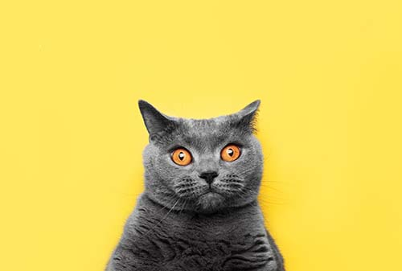

Pets Victoria has a lot to offer
For almost two decades, Pets Victoria has helped in creating true social change by bringing pet adoption into the mainstream. Our work has helped make a difference to the Victorian rescue community and thousands of pets in need of rescuse and rehabilitation. But, until every pet is safe, respected, and loved, we all still have big, hairy work to do.

Milo

Baxter

Luna

Willow

Oliver

Bella